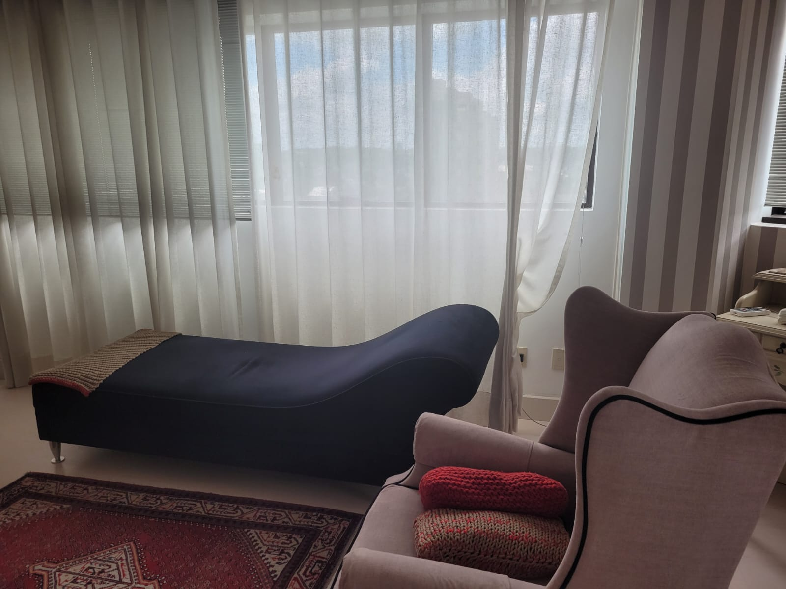
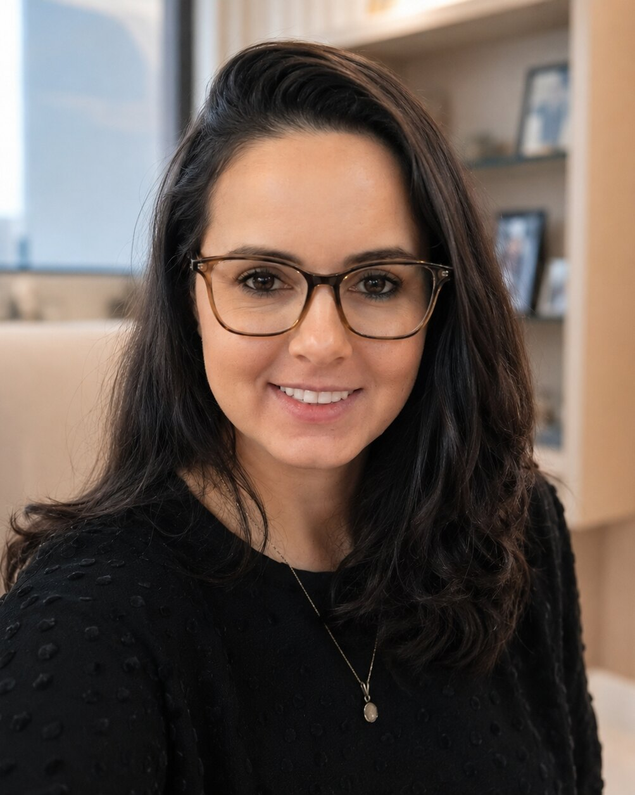

Atendimento presencial
No consultório em Caxias do Sul, em um ambiente reservado e acolhedor para crianças, adolescentes e adultos.
Agendar consulta presencialPsicóloga clínica
CRP 07/28640
Atendimento para crianças, adolescentes e adultos.
Atendimento presencial em Caxias do Sul e online para as demais regiões.

Sou psicóloga clínica em Caxias do Sul, com pós-graduação em clínica psicanalítica. Atendo crianças, adolescentes e adultos, além de realizar processos de orientação profissional e de carreira.
Acredito que cada pessoa chega à terapia com uma história única e que o processo precisa acompanhar essa singularidade.
Por isso, não trabalho com respostas prontas ou caminhos previamente definidos. A escuta vai sendo construída a partir daquilo que cada pessoa traz para o espaço terapêutico.
Busco oferecer uma clínica próxima, humana e responsável, mantendo o cuidado técnico e ético que a profissão exige.
Para mim, estar em terapia é também poder encontrar um espaço onde seja possível pensar sobre si, questionar algumas certezas, compreender experiências e construir novos sentidos.
Psicoterapia individual
A psicoterapia pode ser um espaço para desacelerar, falar sobre o que está acontecendo e olhar para si com mais atenção.
Aqui, você encontra uma escuta cuidadosa e individualizada, em um ambiente onde suas experiências podem ser acolhidas sem julgamentos e onde cada processo é construído respeitando a sua história e o seu tempo.
Nem sempre chegamos à terapia sabendo exatamente o que queremos compreender. Às vezes, existe apenas a sensação de que algo não está bem.
É a partir da fala, da escuta e da construção desse espaço que podemos começar a olhar para aquilo que está sendo vivido e encontrar novas formas de compreendê-lo.
Escolher ou repensar um caminho profissional nem sempre é simples.
A orientação profissional é um espaço para olhar com mais atenção para suas possibilidades, interesses, habilidades e expectativas, especialmente em momentos de escolha, mudança ou dúvida em relação à vida profissional.
O processo pode ser realizado tanto por quem está escolhendo uma profissão quanto por quem deseja repensar sua trajetória, fazer uma transição de carreira ou compreender melhor os caminhos possíveis para o futuro.
Mais do que encontrar uma resposta pronta, a proposta é oferecer um espaço de reflexão que auxilie na construção de escolhas mais conscientes e coerentes com a sua história e com o momento que você está vivendo.
Escolha o formato que couber melhor na sua rotina. O cuidado é o mesmo nos dois.

No consultório em Caxias do Sul, em um ambiente reservado e acolhedor para crianças, adolescentes e adultos.
Agendar consulta presencialPor videochamada, para as demais regiões do país, com a mesma privacidade do consultório.
Agendar consulta onlineO primeiro contato é simples e sem compromisso. Me escreva quando quiser, e conversamos sobre como começar.
Agendar pelo WhatsApp